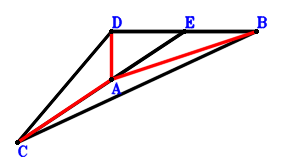
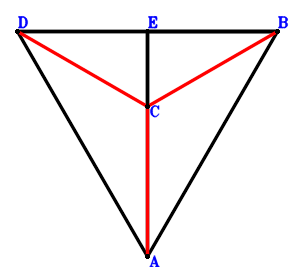

Exercise 45： Let E be the midpoint of DB. D, E, B are collinear and \(CD^{2}=2 DB \cdot DE\). C, A, E are collinear and \(CB^{2}=4 AE \cdot CE\). Prove that \(2 CA^{2}=AB^{2} + DA^{2}\).

\(\because \) E is the midpoint of DB \(\therefore \small\overrightarrow{DE}=\dfrac{\small\overrightarrow{DB}}{2}\).\(\because \) D, E, B are collinear and \(CD^{2}=2 DB \cdot DE\) \(\therefore - 2 \small\overrightarrow{DB} \cdot \small\overrightarrow{DE} + \small\overrightarrow{DC}^{2}=- \small\overrightarrow{DB}^{2} + \small\overrightarrow{DC}^{2}=0\) . . . . . . \(①\)\(\because \) C, A, E are collinear and \(CB^{2}=4 AE \cdot CE\) \(\therefore - 4 \small\overrightarrow{AE} \cdot \small\overrightarrow{CE} + \small\overrightarrow{CB}^{2}=- 4 \left(- \small\overrightarrow{DA} + \small\overrightarrow{DE}\right) \cdot \left(- \small\overrightarrow{DC} + \small\overrightarrow{DE}\right) + \left(\small\overrightarrow{DB} - \small\overrightarrow{DC}\right)^{2}=- 4 \left(- \small\overrightarrow{DA} + \dfrac{\small\overrightarrow{DB}}{2}\right) \cdot \left(\dfrac{\small\overrightarrow{DB}}{2} - \small\overrightarrow{DC}\right) + \left(\small\overrightarrow{DB} - \small\overrightarrow{DC}\right)^{2}=2 \small\overrightarrow{DA} \cdot \small\overrightarrow{DB} - 4 \small\overrightarrow{DA} \cdot \small\overrightarrow{DC} + \small\overrightarrow{DC}^{2}=0\) . . . . . . \(②\)In conclusion, \(\small\overrightarrow{AD}^{2} + \small\overrightarrow{BA}^{2} - 2 \small\overrightarrow{CA}^{2}=\small\overrightarrow{DA}^{2} + \left(\small\overrightarrow{DA} - \small\overrightarrow{DB}\right)^{2} - 2 \left(\small\overrightarrow{DA} - \small\overrightarrow{DC}\right)^{2}=- 2 \small\overrightarrow{DA} \cdot \small\overrightarrow{DB} + 4 \small\overrightarrow{DA} \cdot \small\overrightarrow{DC} + \small\overrightarrow{DB}^{2} - 2 \small\overrightarrow{DC}^{2}=-①-②=0\), that is, \(2 CA^{2}=AB^{2} + DA^{2}\).
Exercise 65： Let E be the midpoint of DB. E, C, A are collinear and \(AB^{2}=4 EA \cdot EC\). D, E, B are collinear and \(DA^{2}=2 DB \cdot EB\). Prove that \(2 CA^{2}=CB^{2} + DC^{2}\).

\(\because \) E is the midpoint of DB \(\therefore \small\overrightarrow{BE}=\dfrac{\small\overrightarrow{BD}}{2}\).\(\because \) E, C, A are collinear and \(AB^{2}=4 EA \cdot EC\) \(\therefore - 4 \small\overrightarrow{AE} \cdot \small\overrightarrow{CE} + \small\overrightarrow{BA}^{2}=\small\overrightarrow{BA}^{2} - 4 \left(- \small\overrightarrow{BA} + \small\overrightarrow{BE}\right) \cdot \left(- \small\overrightarrow{BC} + \small\overrightarrow{BE}\right)=\small\overrightarrow{BA}^{2} - 4 \left(- \small\overrightarrow{BA} + \dfrac{\small\overrightarrow{BD}}{2}\right) \cdot \left(- \small\overrightarrow{BC} + \dfrac{\small\overrightarrow{BD}}{2}\right)=\small\overrightarrow{BA}^{2} - 4 \small\overrightarrow{BA} \cdot \small\overrightarrow{BC} + 2 \small\overrightarrow{BA} \cdot \small\overrightarrow{BD} + 2 \small\overrightarrow{BC} \cdot \small\overrightarrow{BD} - \small\overrightarrow{BD}^{2}=0\) . . . . . . \(①\)\(\because \) D, E, B are collinear and \(DA^{2}=2 DB \cdot EB\) \(\therefore \small\overrightarrow{AD}^{2} + 2 \small\overrightarrow{BE} \cdot \small\overrightarrow{DB}=- 2 \small\overrightarrow{BD} \cdot \small\overrightarrow{BE} + \left(- \small\overrightarrow{BA} + \small\overrightarrow{BD}\right)^{2}=- \small\overrightarrow{BD}^{2} + \left(- \small\overrightarrow{BA} + \small\overrightarrow{BD}\right)^{2}=\small\overrightarrow{BA}^{2} - 2 \small\overrightarrow{BA} \cdot \small\overrightarrow{BD}=0\) . . . . . . \(②\)In conclusion, \(- 2 \small\overrightarrow{CA}^{2} + \small\overrightarrow{CB}^{2} + \small\overrightarrow{DC}^{2}=\small\overrightarrow{BC}^{2} - 2 \left(\small\overrightarrow{BA} - \small\overrightarrow{BC}\right)^{2} + \left(\small\overrightarrow{BC} - \small\overrightarrow{BD}\right)^{2}=- 2 \small\overrightarrow{BA}^{2} + 4 \small\overrightarrow{BA} \cdot \small\overrightarrow{BC} - 2 \small\overrightarrow{BC} \cdot \small\overrightarrow{BD} + \small\overrightarrow{BD}^{2}=-①-②=0\), that is, \(2 CA^{2}=CB^{2} + DC^{2}\).